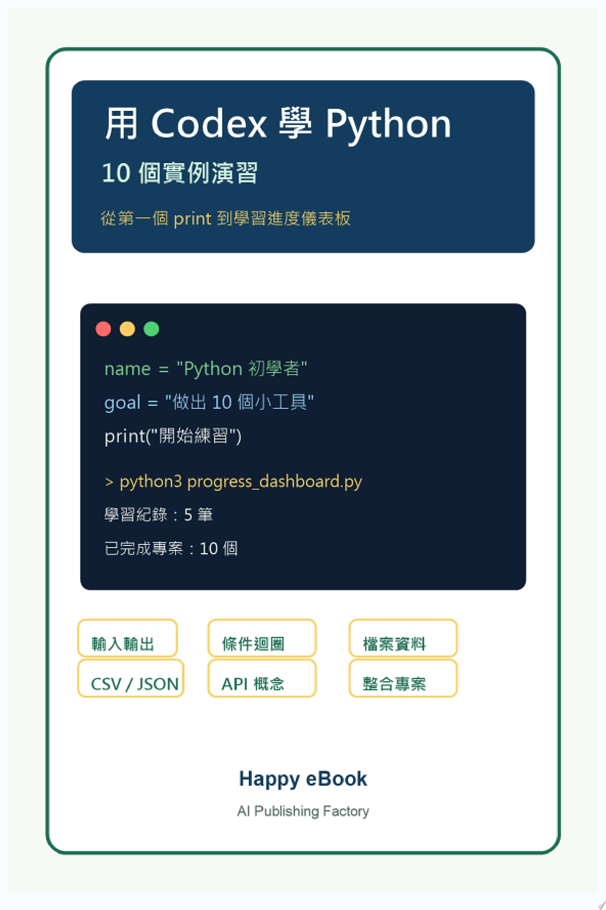

用 Codex 學 Python：10 個實例演習
給初學者的 AI 協作 Python 練習書

用 Codex 學 Python：10 個實例演習
給初學者的 AI 協作 Python 練習書
《用 Codex 學 Python：10 個實例演習》是一本為 Python 初學者設計的 AI coding 協作練習書。它不是一般語法速查書，也不是只展示 AI 產出結果的工具書；它從一個可以執行的小程式開始，逐章建立「描述需求、請 Codex 協作、執行程式、人工檢查、修正錯誤」的學習循環。
第 1 到第 3 章帶讀者完成自我介紹產生器、心情日記小幫手與猜數字遊戲。讀者會練習 print()、變數、input()、條件判斷、迴圈與隨機數，並學會把錯誤訊息交給 Codex 進行小範圍修正。
第 4 到第 6 章開始建立終端機小工具，包括待辦事項 CLI、單字卡練習器與每日學習紀錄本。這幾章重點是 list、dict、函式、檔案讀寫，以及如何讓程式碼保持短小、容易檢查。
第 7 到第 9 章進入資料處理：CSV 成績統計器、JSON 個人書單管理器，以及 API 前置練習的天氣查詢小程式。第 9 章刻意先用假資料模擬 API 回應，不直接呼叫真實線上服務，避免初學者卡在 API key、帳號或網路限制，先學會資料結構與錯誤處理流程。
第 10 章是整合專案：學習進度儀表板。讀者會把學習紀錄、書單與成績資料整理成一份文字報表，練習函式拆分、資料整合與輸出摘要。
附錄提供 Python 初學者可直接複製的 Codex prompt 模板，以及 10 張小練習卡。讀者可以用這些模板建立新練習、請 Codex 解釋程式、修正錯誤、縮小任務範圍，並用短時間任務複習輸入輸出、條件、迴圈、list、dict、檔案、CSV 與基本統計。
本書每章都包含可直接貼給 Codex 的 prompt、範例程式、設計取捨、人工檢查點、卡住時的處理方式與延伸練習。目標不是讓 AI 取代學習，而是讓讀者在 AI 協助下更快做出成果，同時保留自己檢查與判斷的能力。